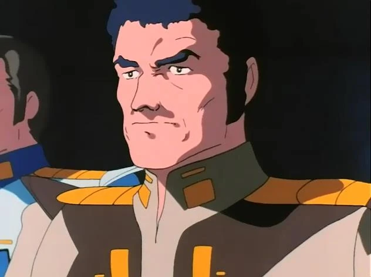

<ion-header>
  <ion-toolbar color="tertiary">
    <ion-title>Rolf Emerson</ion-title>
  </ion-toolbar>
</ion-header>

<ion-content class="ion-padding">
  <div class="docente">
    
  </div>
  <ion-list>
    <ion-item button routerLink="/generate-qr">
      <ion-icon slot="start" name="qr-code-outline"></ion-icon>
      <ion-label>Generar QR</ion-label>
    </ion-item>

    <ion-item button routerLink="/cursos-docente">
      <ion-icon slot="start" name="book-outline"></ion-icon>
      <ion-label>Ver Cursos</ion-label>
    </ion-item>
    <ion-item button routerLink="/home">
      <ion-icon slot="start" name="exit"></ion-icon>
      <ion-label>Cerrar Sesión</ion-label>
    </ion-item>
  </ion-list>
</ion-content>
